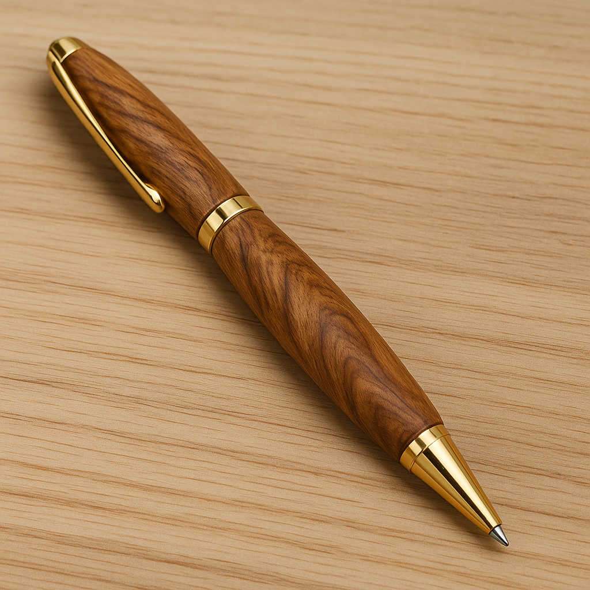

Student evidence
Your work stays on this browser
Each topic saves student details, quiz progress and written responses on this device. Use Print / Save PDF when your teacher asks you to finish a topic. Browser storage is a working copy, not an online submission.
01Plan
02Prepare
03Drill
04Turn
05Refine
06Assemble
07Evaluate
Guided student flow
One controlled decision at a time
Each topic follows the same learning rhythm: read three substantial project-specific theory sections, test understanding with guided feedback, write scaffolded responses, save evidence and carry the decisions into the workshop. Your teacher may select the topics that best support the current practical stage.
Topic library
Ten focused topics
Use the topics in the order or selection your teacher sets. They support a practical Pen project of about three weeks rather than prescribing ten separate lessons.
01
Topic 1
Brief, approved resource and lathe safety
Understand the Pen brief, use the supplied Pen Making resource and manage wood-lathe risk before practical work.
Open topic02
Topic 2
Timber, grain and responsible planning
Inspect the approved blank, preserve grain orientation and plan material use without inventing a kit cutting schedule.
Open topic03
Topic 3
Marking, sleeves and clean drilling
Maintain reliable references, prepare the two brass sleeves and clear swarf during the teacher-approved drilling process.
Open topic04
Topic 4
Mandrel principles and pre-start checks
Understand between-centres turning, identify the approved mandrel components and verify the supervised lathe setup.
Open topic05
Topic 5
Controlled turning and profile checks
Move gradually from square to cylindrical form while observing fibre response, symmetry, alignment and stop points.
Open topic06
Topic 6
Surface diagnosis, abrasives and finish
Diagnose turning marks, use the approved progressive abrasive sequence and apply only the verified finishing product.
Open topic07
Topic 7
Components, assembly and protection
Stage the matched kit, follow the approved clip/button and nib-shroud sequence, and stop before misalignment causes damage.
Open topic08
Topic 8
Design, standards and production
Resolve comfort and appearance within kit constraints, then compare quality systems and production technologies.
Open topic09
Topic 9
WMS, process flow and impacts
Build an evidence-based WMS and production flowchart, then explain social and environmental trade-offs honestly.
Open topic10
Topic 10
Evidence, PMI and skill transfer
Photograph authentic stages, evaluate the completed Pen with PMI and review the full evidence package.
Open topicCore project resource
Approved Pen Making process resource
The supplied teacher resource and current kit instructions control the project sequence and component details. Use it with the teacher demonstration and workshop SOP. Do not copy settings, dimensions or procedures from another kit.
Open approved Pen Making resource
Progressive portfolio
Twelve scaffolded evidence cards
Build the folio while the project is being made. Each card explains why the evidence matters, what to collect, how to caption it and what a strong response needs to show.
NSW Stage 5 outcomes
Visible syllabus alignment
The learning and evidence sequence explicitly develops the Industrial Technology outcomes below.
identifies, assesses and manages the risks and WHS issues associated with Pen manufacture
applies design principles in the development and production of the Pen project
identifies, selects and uses a range of hand and machine tools, equipment and processes to produce quality practical projects
selects, justifies and uses a range of relevant and associated materials for specific applications
selects, interprets and applies a range of suitable communication techniques in the development, planning, production and presentation of ideas and projects
identifies and participates in collaborative work practices in the learning environment
applies and transfers skills, processes and materials to a variety of contexts and projects
evaluates products in terms of functional, economic, aesthetic and environmental qualities and quality of construction
describes, analyses and uses a range of current, new and emerging technologies and their various applications
describes, analyses and evaluates the impact of technology on society, the environment and cultural issues locally and globally
Construction and evidence pathway
What students will be doing
Your teacher can combine or select these learning topics to match the practical sequence.
- 1Topic 1
Interpret the brief and approved Pen Making resource, then establish the lathe risk controls.
- 2Topic 2
Inspect timber, preserve grain orientation and plan responsible material use.
- 3Topic 3
Mark reliable references, prepare the two brass sleeves and drill under the approved process.
- 4Topic 4
Identify the approved mandrel system and complete the supervised pre-start checks.
- 5Topic 5
Develop the cylindrical form gradually while monitoring fibre response, profile and alignment.
- 6Topic 6
Diagnose surface defects, use the approved abrasive sequence and verified finishing product.
- 7Topic 7
Stage the matched components and assemble without forcing or damaging the finished bodies.
- 8Topic 8
Resolve the Pen design within kit constraints and examine standards and production technologies.
- 9Topic 9
Complete the WMS and production flowchart, then explain social and environmental impacts.
- 10Topic 10
Build authentic evidence, complete PMI and reflect on transferable skills.
Teacher resources
Suggest a Pen website change
Staff can request an addition, update or deletion in the shared change document. The page address is copied automatically, so the request only needs a short note and an optional screenshot.
Keep it private: do not include student names, student work, marks, email messages or other sensitive information.
Open staff change document
This copies the current page link before opening the staff document.
Work side by side: in the document window, press Windows + Right Arrow, then choose the Pen website for the left side.